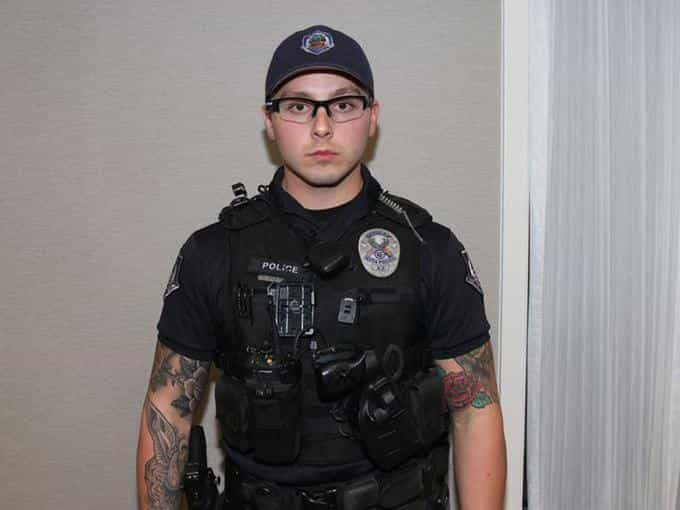
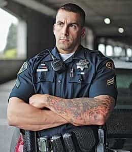

Mr. Luthra is an author and artist who writes about news, fitness, culture, and anything else that meets his interests. If you like his style, visit The Straightforward Voice, where you can find more FREE content.


Twenty year old Emily Weinman was recently arrested at Wildwood beach in New Jersey and now she is suing for excessive force used by the officers. In the body cam video, the officer is shown suspecting Weinman was consuming alcohol in public and being underage. The officer gave her a breathalyzer test, but it was hard to see what the reading said in the video. Weinman explained that she was not drinking and waiting for her aunt.
However, the officer continued to ask her more questions to which Weinman refused to answer leading the officer to say, “I’m done with you”, and “you’re about to get dropped” as he pursued Weinman who was calling for help. She is shown being tackled and screaming while the officer pulled her hair and punched her repeatedly.
The Jersey Shore beach babe arrest is another example of why you should not argue or engage in any dialogue with a cop since they are trained to get you to verbally admit to a crime. While legally in many states you aren’t required to play 21 questions if approached, most don’t know that and the cops know it, so they continue to push your buttons to get you to say something they can use to bust you.
Being a cop is very difficult these days with all the political correctness and everybody having an entitlement mindset thinking they have rights, but still some cops take things too far. As seen in the video, the cop punched the unarmed young girl who was not a physical threat to them or the public. Yes she should’ve kept her mouth shut and just complied as resisting only leads to more trouble, but there’s a civil way to deal with college chicks, even if they’re rude.
At another angle, you get a better picture of what happened. Pouring out the alcohol and issuing a fine would have been enough. Was it really necessary for two men to hold her down and slug her? No, but then again Weinman was repeatedly cursing them and refusing to answer questions they were asking so in a way she brought it onto herself. Kids need to learn to just shut up when dealing with cops, they just don’t know when to quit.
It’s not farfetched to conclude that some bystanders wanted to pummel the cops, but they would have been beaten severely and arrested, or even shot. According to New Jersey Law, a cop cannot demand your identification and pursue you without a warrant or proper reason, but the common mistake this girl made was having an attitude. Snappy replies like “I don’t have to answer you” only increases your odds of being arrested.

Tony was a cop I used to work with at his second job at the warehouse. He had no tattoos, no six pack, no blazers, nothing—just an honest work ethic. He told me and the other guys that if he ever caught us speeding or not wearing a seat belt that he wouldn’t care. Normal men wouldn’t unless it gets out of hand in a crowd where safety is an issue.
You don’t see guys like him anymore on the force, but rather diversity hires like the one who shot Justine Damond, or tattooed junkies like Philip Brailsford, the officer who killed Daniel Shaver while he begged for his life. These beta males are quick to pull the trigger, because they themselves are weak and were never meant to be put into these positions wielding such enormous power.
Similar incidences in the recent past like the Salt Lake City nurse being arrested, and Michael Cohen’s office being raided by the FBI shows that America is heading down a slippery slope.
Another thing is if cops don’t make a certain number of arrests or tickets, their superiors question why are they not doing their job, so they go out looking to bust someone for the dumbest reasons just to meet their quota.
Writing tickets is the best way to get back at someone giving attitude, because it hurts them financially. I heard of an incident in Jersey where an Indian guy cursed out an officer to his face for giving him a ticket. This man probably had a high salary job and probably looked down on the officer, but instead of getting angry, the cop continued to write ticket after ticket, and do you know what the Indian man did then? He got on his hands and knees and begged for forgiveness while touching the officer’s shoes. I’m sure that’s a story he shared with his buddies.
That’s a responsible cop who would not get riled up over petty things like a skinny college girl with a supposedly opened beer bottle.

Just comply, it’s not worth risking your life. I know emotions and tempers get high, but be sensible. Whenever I was stopped, I made it out unscathed. I’ve also met and befriended a lot of former cops, and they all warn not to anger one, because if they want, they can keep pressing you which will increase your odds of slipping up giving them reason to bust you.
Paying tickets or fines is better than potentially losing your life. If you disagree with the officer’s decision, complain to the municipal office. “Knowing your rights” like they say on YouTube doesn’t work in reality, especially in Jersey. If pressed about a serious accusation like rape, you can politely reply that you can’t answer questions pertaining to such an allegation without legal representation and wish to remain silent.
This is what the American youth needs to understand, but hey if you want to play tough guy, go ahead right ahead, don’t say I didn’t warn you.
Read More: What To Do When The Cops Show Up